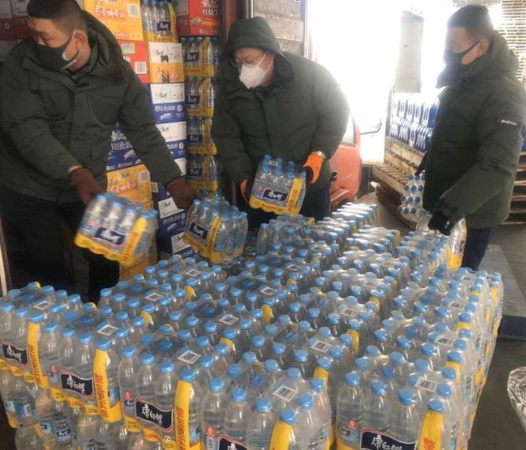

我是互联网人，我没有做逃兵
原文链接 备份链接 《战疫口述记》，是燃财经在新型冠状病毒肺炎期间推出的特别栏目，记录疫情亲历者的观察和感受。本文为第6篇，查看前5篇请点击《我和公司都快熬不住了》《节后返京，太太太南了》《我的“流浪”春节》《农村这样防肺炎》《我在武汉 …

同力协契 共克时艰

武汉“封城”已三周，新冠肺炎全国感染人数还在持续上涨。
所有人都在期待拐点的到来，无数白衣天使依旧坚守在抗击疫情第一线，一刻不敢松懈。社会各界也在通过各种方式参与到这场没有硝烟的抗疫保卫战里。
这期间，温暖善良频频显现。病毒无情，人有情。
“脱下防护服已近虚脱”
在湖北防控疫情一线，无数医护人员不分昼夜地连续奋战，他们全副武装，由于长时间穿戴着口罩、护目镜、防护服、隔离衣、手套等多层防护，再加上负压病房空调的温度，医护人员几乎都是热得额头上汗如雨注。
在这样高强度的身体透支下，出病房的时候，不少人感觉“脱下防护服就像脱了一层皮”，身体的水分不断流失，已近虚脱。

前不久钟南山团队发布的关于老年人新型冠状病毒肺炎的防范指引中也建议大家，注意合理的饮食习惯，均衡膳食，勤喝水，保持健康的生活状态，提高抵抗力。因此很多医护人员也在不停地提醒一线同行：保持健康的生活状态，适当补充水分，否则很容易虚脱，反而耽误救治病人。
短缺的医护人员，紧缺的防疫物资，每一条关于武汉的新闻都牵动着大家的心，而当下最迫切要解决的问题就是：如何支援武汉？如何支援医护人员？
“你守护大家，我守护你”
疫情爆发后，各行各业都伸出了捐助之手，捐款、捐献医疗物资、提供生活物资等，为抗疫防病毒贡献着自己的力量。
阿里巴巴设立10亿元医疗物资供给专项基金；美的集团向武汉火神山医院、武汉雷神山医院捐献所需全部家电；顺丰速运开通救援物资免费公益运输通道；武汉当地的康师傅员工自发组织抗疫救援活动，为武汉各大医院运送生活所需食用物资，保障医务人员的安全饮水。

在武汉“封城”的情况下，武汉当地康师傅员工自发通过各种公开渠道和个人社会资源来汇整医院信息，向当地各大医院打去电话，确认急需哪些物资援助，做好需求统计。同时紧急召开抗疫支援行动协调会，商议物资捐赠计划和实施方案。当地员工收到消息后，也纷纷主动放弃休假，申请加入到这次抗疫支援特别行动中来。

康师傅湖北行销公司湖北市场处主管郝海波，第一时间就站出来，与志愿者车队一同从前期联络医院的需求，资料整理，到发货以及配送，不停为支援行动忙碌着。他作为医护人员的家属，特别理解在疫情迅速发展变化下，医护人员的辛劳和不易，也明白在医院这种高危且人群密集场所，桶装水或水杯会长时间暴露在空气当中，容易受到飞沫感染，而即开即饮的包装水则大大降低了交叉感染的几率，可以让医护人员们有一个更安心的饮水环境。
但其实，无论是在家休息还是在外奔波，都要注意合理的生活习惯和个人防护措施。日常生活中安心且健康的水源也是必不可少的。近日，生态环境部出台了《应对新型冠状病毒感染肺炎疫情应急监测方案》，要求在疫情防控期间加强饮用水水源地水质预警监测，增加余氯和生物毒性等疫情防控特征指标的监测。虽然在水中添加氯可起到杀菌及去除水中微生物的作用，但想更彻底地消除余氯，日常烧水时就需让水多沸腾几分钟。如果想要追求更安心的饮水方式，也可直接选择经过RO反渗透技术过滤的包装水，能有效过滤掉水中重金属和病毒，这类包装水通常符合国家HACCP体系认证，饮用起来更加方便、安心。
虽然疫情还在继续，但不乏温暖的故事让我们相信胜利的曙光就在前方。不管是在前线与疫魔做斗争的白衣天使们，还是坚守在一线的各行各业人员，以及承担起社会责任的企业们，大家都希望尽绵薄之力，为疫情笼罩的寒冬带来一丝温暖。并都相信，只要我们齐心合力，各尽所长，灾难就能抗过来，春天就会到来。
本文仅代表作者观点，不代表本刊立场
原文链接 备份链接 《战疫口述记》，是燃财经在新型冠状病毒肺炎期间推出的特别栏目，记录疫情亲历者的观察和感受。本文为第6篇，查看前5篇请点击《我和公司都快熬不住了》《节后返京，太太太南了》《我的“流浪”春节》《农村这样防肺炎》《我在武汉 …
原文链接 备份链接 武汉市已将所有捐赠物资集中统一调配，这有助于物尽其用，但配送效率亟须提升。这几日陆续有社会捐赠物资送到武汉协和医院，但仅有一线医护人员能穿上防护服，很多医用物资仍然紧缺 文 |《财经》 …
原文链接 备份链接 新型冠状病毒疫情像是一场突如其来的阴霾，在这个冬天笼罩了华中大地。相较于最受关注的武汉市民，周边城市的人们，像是处在阴霾边缘，遭受侵袭，却又不常被看见。面对重重困难，孝感、黄冈、黄石、信阳、荆州、天门……各个城市的百姓 …
原文链接 备份链接 医疗防护资源不足是常态，各地资源调配需平衡，“灯下黑”区域渐次光亮，但少数地区的疫情宣传依旧不到位 外地务工返乡者最担忧的问题是年后经济收入断流、地域歧视，担心节后可能无法返工 本文首发于南方人物周刊 文 | 本刊记 …
原文链接 备份链接 *************▲************* 2020年1月28日，武汉协和医院感染科病房。 （新华社/图） 全文共5066字，阅读大约需要7分钟。 从那时起，护士们戴的不再是常规的护士帽，换成了另一种蓝 …